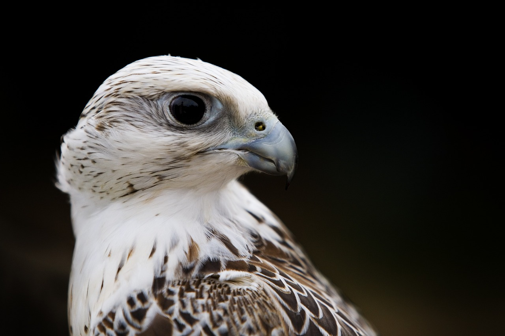
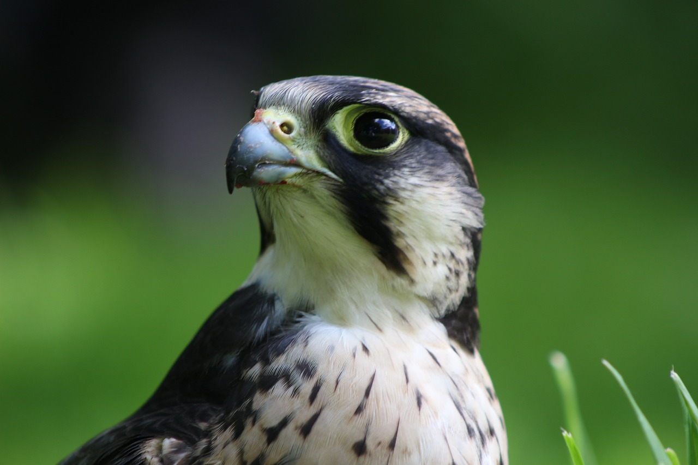
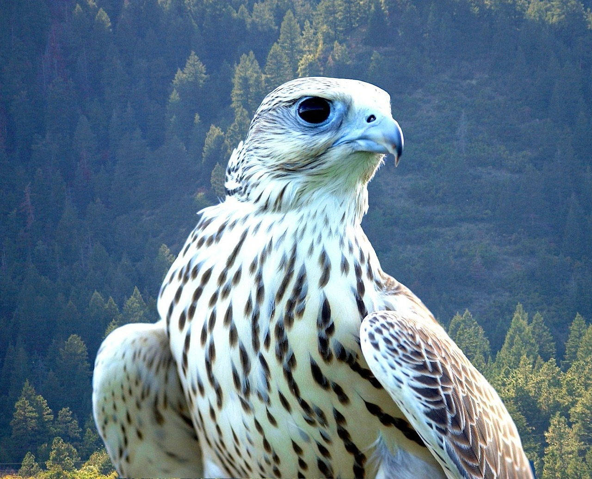
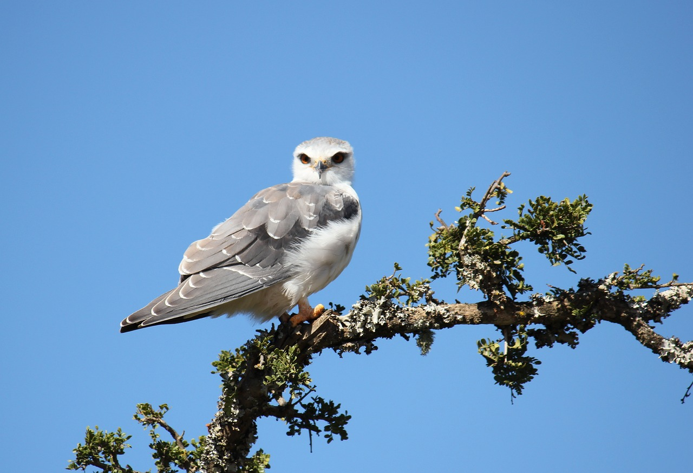

The peregrine falcon holds the title for being the fastest animal on Earth, reaching speeds of over 240 miles per hour during a hunting stoop.
Their eyes are specially adapted to locate prey from great distances and spot movement with incredible clarity, Falcons are truly amazing birds.
They feed on a variety of small to medium-sized animals, including birds, mammals, reptiles, and insects, making them more of apart of nature.
These birds exhibit a wide range of colors and patterns, including shades of brown, gray, black, and white, falcon's aren't racist frfr